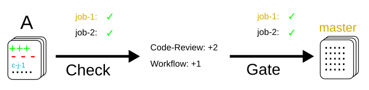
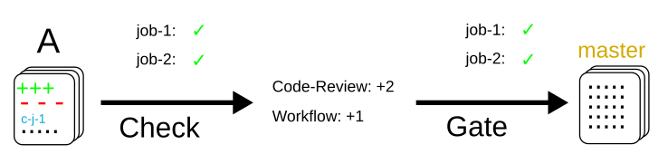
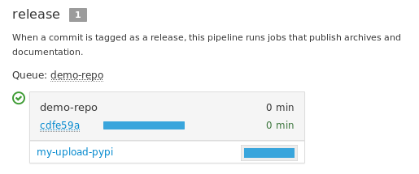

In this article, we will explain how to use job secrets stored directly in the git repositories of projects.
This article is part of the Zuul hands-on series.
The examples and commands that follow are intended to be run on a Software Factory sandbox where a demo-repo repository exists. You should have such an environment after following the previous articles in this series:
- To deploy a Software Factory sandbox please read the first article of the series.
- To create the demo-repo repository, please follow the sections Clone the config repository and Define the demo-repo repository sections.
Incidentally, most of the links reference sftests.com which is the default domain of the sandbox. Make sure to adapt the links if necessary.
If you have already deployed a Software Factory sandbox and created a snapshot as suggested, you can restore this snapshot in order to follow this article on a clean environment. In that case make sure the virtual machine's time is correct post restoration. If not fix it by running
systemctl stop ntpd; ntpd -gq; systemctl start ntpd
Projects Types: config vs untrusted
Zuul defines two categories of projects:
- config projects, and
- untrusted projects.
The main difference is that config projects are protected and changes to their Zuul configuration are not tested speculatively. Untrusted projects' configuration changes are tested speculatively before being merged, while config project configuration are only effective after being merged.
Let's vizualize the difference on some workflow diagrams:
Untrusted projects
Let's assume A is an incoming patch to an untrusted project. A modifies the job-1 being run in the check gate (job-1, the modified job is pictured in orange below). Merging this change will look like this in terms of workflow:
The change gets tested speculatively, therefore the change to job-1 is used immediately in the check and gate pipeline, before being merged.
Config projects
Let's assume now that A is an incoming patch on a config project. Merging this change will look like this in terms of workflow:
This time, the change to job-1 is not applied in the check or gate pipeline. The rationale here is that changes to a config project are impactful and need to be reviewed by humans before being run automatically. If they were run as soon as the check pipeline, nothing would prevent a malicious user from leaking passwords used in the jobs, for example.
Once A is merged, subsequent patches get tested with the new changes:
Regarding secrets, the main difference between untrusted and config projects is that for security reasons, untrusted projects' secrets shall only be used in post-review pipelines such as the pre-defined "periodic" or "post".
Using a secret in a config project
A typical use case is a secret needed by a publishing or deployment job. Actually, the base job (built-in in Software Factory) is using a secret to upload job logs to the log server defined in the config project's zuul.d/_secret_sflogs.yaml file, and used by the base job defined in zuul.d/_jobs-base.yaml file.
To encrypt a custom secret, you can use the zuul-client script from the Zuul source repository. This script needs the tenant name and project name to retrieve the project's public key and properly encrypt the secret. We will use it to encrypt a custom secret for the config project.
You can install from source here zuul-client , or through pip:
pip install zuul-client
zuul-client -v --insecure --zuul-url https://sftests.com/zuul encrypt --project config --tenant local
<write your secrets here and exit with Ctrl+D>
...
DEBUG:urllib3.connectionpool:https://sftests.com:443 "GET /zuul/api/tenant/local/key/config.pub HTTP/1.1" 200 800
DEBUG:zuul-client:Calling openssl
DEBUG:zuul-client:calling "openssl version"
DEBUG:zuul-client:calling "openssl rsa -text -pubin -in /tmp/tmpti0h47uu"
writing RSA key
INFO:zuul-client:Public key length: 4096 bits (512 bytes)
INFO:zuul-client:Max plaintext length per chunk: 470 bytes
INFO:zuul-client:Input plaintext length: 10 bytes
INFO:zuul-client:Number of chunks: 1
DEBUG:zuul-client:calling "openssl rsautl -encrypt -oaep -pubin -inkey /tmp/tmpti0h47uu" with each data chunk:
DEBUG:zuul-client: chunk 1
- secret:
name: <name>
data:
<fieldname>: !encrypted/pkcs1-oaep
- joTrPXkIVs9mp9Kh88ly1HAE64Ygu5yRxlrPslb8vG7qNA2isRdvhwO5I5+4WhfjNK43q
HjCdeIc9LmqZHi5cglYiHHjHZYNhDXatOUt+T7fotyb+VMkXrZj8EiHINgggbJH+/lHBU
YFhyqjBojyTq1TQUl7FiexTfZS2KFU1st5GgPNcxJJQ2g4lcyXuWNFauC5C4PU08mn1mi
# You can also check and get the public key manually:
curl -k https://sftests.com/zuul/api/tenant/local/key/config.pub
Use the --infile option if the secret is a certificate file or a SSH key. Write the output to a new zuul configuration file in the config project like that:
# config/zuul.d/my-secret.yaml
---
- secret:
name: my-publication-secret
data:
# Extra cleartext data can be added to a secret
hostname: publication-host.example.com
password: !encrypted/pkcs1-oaep
- joTrPXkIVs9mp9Kh88ly1HAE64Ygu5yRxlrPslb8vG7qNA2isRdvhwO5I5+4WhfjNK43q
HjCdeIc9LmqZHi5cglYiHHjHZYNhDXatOUt+T7fotyb+VMkXrZj8EiHINgggbJH+/lHBU
YFhyqjBojyTq1TQUl7FiexTfZS2KFU1st5GgPNcxJJQ2g4lcyXuWNFauC5C4PU08mn1mi
Then the secret can be attached to a job like so:
# config/zuul.d/my-job.yaml
---
- job:
name: my-publication-job
run: playbooks/my-publication.yaml
secrets:
- name: publication_secret
secret: my-publication-secret
Finally, when the playbook is executed, the secret content will be decrypted and available as the secret name dictionary:
# config/playbooks/my-publication.yaml
---
- hosts: all
tasks:
# Copy secret to a configuration file
- name: Install secret
copy:
content: "{{ publication_secret.password }}"
dest: ".publication-secret"
no_log: true
# Uses as an environment variable
- name: Run publication command
command: env
environment:
MY_SECRET: "{{ publication_secret.password }}"
MY_HOST: "{{ publication_secret.hostname }}"
- name: Remove secret file
file:
path: ".publication-secret"
state: absent
Commit the 3 files and merge them in the config project:
git add -A
git commit -m "Provide my publication job"
git review
# and approve the change on Gerrit and wait for the change to be merged
Then we can test that the new job by adding it to the demo-repo's pipeline.
# demo-repo/.zuul.yaml
- project:
check:
jobs:
- my-publication-job
Commit this file in the demo-repo project and use git-review to trigger the job execution:
git add .zuul.yaml
git commit -m "Configure project pipelines"
git review
To open the same menu as the image above go to Zuul's Build page (sftests.com). Here in the top lines of the table you can find the my-publication-job in the job column, click on SUCCESS in the Result column. You will find below Artifacts, and under it ARA report click on it. On this page will be all playbook tasks. Expand Run publication command task.
As you can see, the job can be used by any project and the playbook is executed with the secret decrypted. The env command is leaking the secret content, thus when writing job that uses secret, it is recommended to make sure the secret is not exposed during the job execution.
Because the job is defined in a config project, a malicious user can not submit a review with a new playbook task to dump the secret content because the job's content is not evaluated speculatively. Read below for more Security Considerations.
Using an untrusted-project secret
Secrets don't have to be set exclusively in config projects. In this example we are going to create a publish-to-pypi job for the demo-repo project so that it is published to pypi on release. To do that we will use the build-python-release and upload-pypi roles from zuul-jobs.
Clone the demo-repo and provision it with this demo code .
The default release process uses wheel packaging, thus you will have to update the setup.py to use setuptools:
# demo-repo/setup.py
import setuptools
setuptools.setup(name='demo')
Also make sure the following packages are installed on the node running the job. The sandbox is using the runC driver to run tests so install the packages on the Software Factory instance directly:
sudo yum install -y python-wheel python-twine
Go back to demo-repo project and encrypt a fake pypi account password (since we don't want to actually publish this demo project) using this command:
zuul-client -v --insecure --zuul-url https://sftests.com/zuul encrypt --tenant local --project demo-repo
Create this demo-repo zuul configuration and replace the password payload with the output of zuul-client :
# demo-repo/.zuul.yaml
---
- secret:
name: my-pypi-secret
data:
username: my-pypi-account
password: !encrypted/pkcs1-oaep
- vY1AfQZimyeFgKchVZYoF9hTcF511U6wS7PZFrzX/+po15a45Nt4mia/RNz/3+dRhi8ip
6xIBD8S7JzrwmfovGg1fDPtNwSFO+awZ5f/B6aH35X0nuC5OQ3Jeu641inhNonuSKJ6Sh
...
- job:
name: my-upload-pypi
description: Release wheel to pypi using my-pypi-account
run: playbooks/publish/release.yaml
post-run: playbooks/publish/pypi.yaml
secrets:
- name: pypi_info
secret: my-pypi-secret
- project:
check:
jobs:
- tox-pep8
gate:
jobs:
- tox-pep8
release:
jobs:
- my-upload-pypi
Create the run playbook:
# demo-repo/playbooks/publish/release.yaml
---
- hosts: all
roles:
- build-python-release
And the post playbook:
# demo-repo/playbooks/publish/pypi.yaml
---
- hosts: all
roles:
- role: upload-pypi
when: zuul_success | bool
Commit the 3 files and merge them in the demo-repo project:
git add -A
git commit -m "Provide my upload-pypi job"
git review
# and approve the change on Gerrit and wait for the change to be merged
To test the publication job, push a new tag:
cd demo-repo
git tag -a -m 0.0.1 0.0.1
git push gerrit 0.0.1
Resulting in:
The error is expected because the password was incorrect.
To restart the job, you can use the zuul reenqueue command (on the Software Factory instance):
zuul enqueue-ref --tenant local --trigger gerrit \
--pipeline release --project demo-repo \
--ref refs/tags/0.0.1 \
--newrev git-commit-sha1
To update the tag content, it's recommended to push a new tag as Zuul doesn't handle reference deletion gracefully.
The job can be used by any project, but only in a post-review pipeline (e.g. post or release). Attempting to modify the release playbook and adding the job to a check pipeline will result in a Zuul configuration error to prevent malicious access to the secret.
Security considerations
Here are some security considerations when using secrets in Zuul jobs:
- Secrets may only be used by jobs defined within the same project.
- Config project secrets can be used in check pipelines, but be careful to prevent unexpected usage. For example, secrets shouldn't be written to disk in a pre run as a job's user may be able to access them during the speculative run phase.
- Be wary when holding a node that have used a secret because the secret may be recovered from the swap or the filesystem journal.
- Publication jobs can use the post-review job attribute to prevent usage in the check pipeline. Note that post-review is automatically set for untrusted projects' jobs using secrets.
- Jobs that have access to protected resources can be restricted to specific projects using the allowed-projects job attribute.